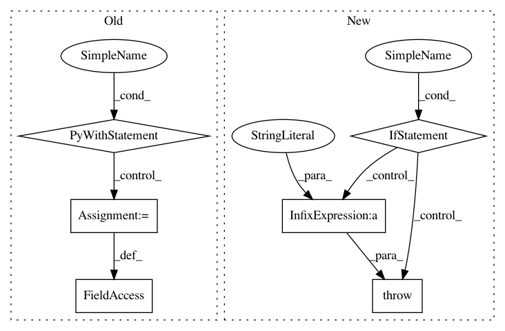

2e0f0929df4b01b269962a6423d6cb78b6d3da17,tensorlayer/layers/inputs.py,EmbeddingInput,__init__,#EmbeddingInput#Any#Any#Any#Any#Any#Any#,280
Before Change
logging.info("EmbeddingInput %s: (%d, %d)" % (self.name, vocabulary_size, embedding_size))
with tf.variable_scope(name):
embeddings = tf.get_variable(
name="embeddings", shape=(vocabulary_size, embedding_size), initializer=E_init,
dtype=LayersConfig.tf_dtype, **self.E_init_args
)
self.outputs = tf.nn.embedding_lookup(embeddings, self.inputs)
self._add_layers(self.outputs)
self._add_params(embeddings)
After Change
self.dtype = dtype
logging.info("OneHotInput %s: %s" % (self.name, str(inputs.shape.as_list())))
if self.depth is None:
raise RuntimeError(self.__class__.__name__ + ": depth == None the number of output units is undefined")
def build(self, inputs):
pass
def forward(self, inputs):
In pattern: SUPERPATTERN
Frequency: 4
Non-data size: 6
Instances
Project Name: tensorlayer/tensorlayer
Commit Name: 2e0f0929df4b01b269962a6423d6cb78b6d3da17
Time: 2018-12-04
Author: dhsig552@163.com
File Name: tensorlayer/layers/inputs.py
Class Name: EmbeddingInput
Method Name: __init__
Project Name: dmlc/gluon-cv
Commit Name: 4999f9795af7a21ca69adf5f72301b79f719498e
Time: 2018-06-05
Author: 8041160+zhanghang1989@users.noreply.github.com
File Name: gluoncv/model_zoo/pspnet.py
Class Name: PSPNet
Method Name: __init__
Project Name: dmlc/gluon-nlp
Commit Name: a947d66d28baaae1302363556a8a18b04fa6aa40
Time: 2018-08-16
Author: leonard@lausen.nl
File Name: gluonnlp/embedding/evaluation.py
Class Name: ThreeCosMul
Method Name: __init__
Project Name: asyml/texar
Commit Name: 791e7325a985bc8dd1a213c7cd1b1e888f934074
Time: 2018-05-27
Author: zhitinghu@gmail.com
File Name: texar/modules/embedders/embedders.py
Class Name: WordEmbedder
Method Name: __init__